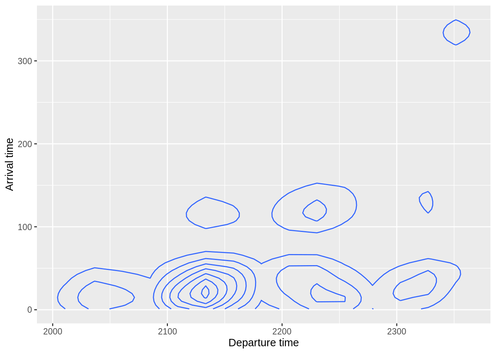
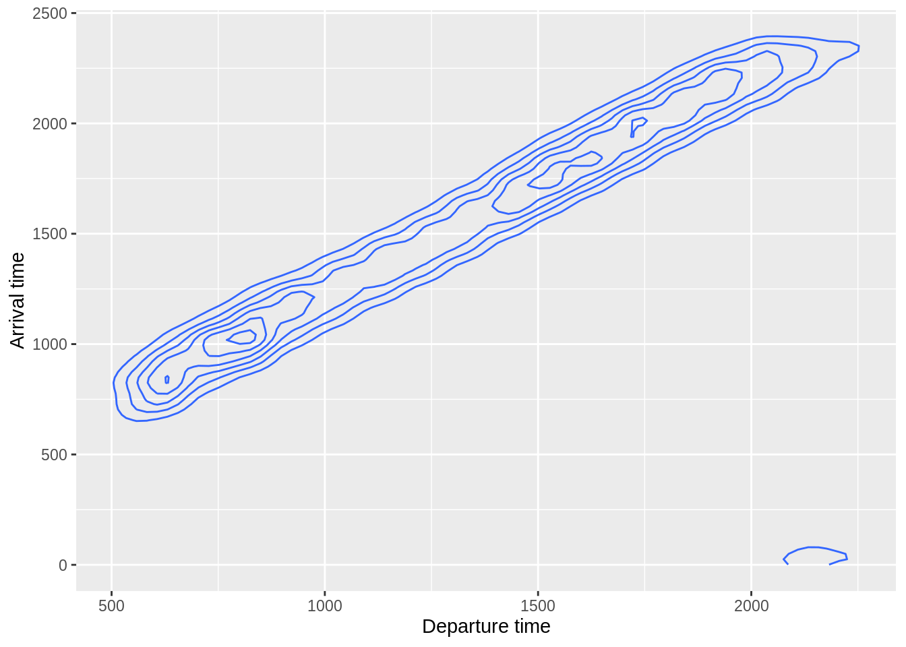

Find three ways to select the first five variables from the flights dataset.
flights %>%
select(___, ___, ________)
flights %>%
select(___:___)
flights %>%
select(___:___)► Solution:
flights %>%
select(year, month, day, dep_time, sched_dep_time)## # A tibble: 336,776 x 5
## year month day dep_time sched_dep_time
## <int> <int> <int> <int> <int>
## 1 2013 1 1 517 515
## 2 2013 1 1 533 529
## 3 2013 1 1 542 540
## 4 2013 1 1 544 545
## 5 2013 1 1 554 600
## 6 2013 1 1 554 558
## 7 2013 1 1 555 600
## 8 2013 1 1 557 600
## 9 2013 1 1 557 600
## 10 2013 1 1 558 600
## # … with 336,766 more rowsflights %>%
select(year:sched_dep_time)## # A tibble: 336,776 x 5
## year month day dep_time sched_dep_time
## <int> <int> <int> <int> <int>
## 1 2013 1 1 517 515
## 2 2013 1 1 533 529
## 3 2013 1 1 542 540
## 4 2013 1 1 544 545
## 5 2013 1 1 554 600
## 6 2013 1 1 554 558
## 7 2013 1 1 555 600
## 8 2013 1 1 557 600
## 9 2013 1 1 557 600
## 10 2013 1 1 558 600
## # … with 336,766 more rows## Numeric indexes work, too
flights %>%
select(1:5)## # A tibble: 336,776 x 5
## year month day dep_time sched_dep_time
## <int> <int> <int> <int> <int>
## 1 2013 1 1 517 515
## 2 2013 1 1 533 529
## 3 2013 1 1 542 540
## 4 2013 1 1 544 545
## 5 2013 1 1 554 600
## 6 2013 1 1 554 558
## 7 2013 1 1 555 600
## 8 2013 1 1 557 600
## 9 2013 1 1 557 600
## 10 2013 1 1 558 600
## # … with 336,766 more rowsFind three ways to exclude the date of the flight.
flights %>%
select(___, ___, ______________________)
flights %>%
select(-___, -___, -___)
flights %>%
select(-___:-___)► Solution:
flights %>%
select(-year, -month, -day)## # A tibble: 336,776 x 16
## dep_time sched_dep_time dep_delay arr_time sched_arr_time arr_delay carrier
## <int> <int> <dbl> <int> <int> <dbl> <chr>
## 1 517 515 2 830 819 11 UA
## 2 533 529 4 850 830 20 UA
## 3 542 540 2 923 850 33 AA
## 4 544 545 -1 1004 1022 -18 B6
## 5 554 600 -6 812 837 -25 DL
## 6 554 558 -4 740 728 12 UA
## 7 555 600 -5 913 854 19 B6
## 8 557 600 -3 709 723 -14 EV
## 9 557 600 -3 838 846 -8 B6
## 10 558 600 -2 753 745 8 AA
## # … with 336,766 more rows, and 9 more variables: flight <int>, tailnum <chr>,
## # origin <chr>, dest <chr>, air_time <dbl>, distance <dbl>, hour <dbl>,
## # minute <dbl>, time_hour <dttm>flights %>%
select(-year:-day)## # A tibble: 336,776 x 16
## dep_time sched_dep_time dep_delay arr_time sched_arr_time arr_delay carrier
## <int> <int> <dbl> <int> <int> <dbl> <chr>
## 1 517 515 2 830 819 11 UA
## 2 533 529 4 850 830 20 UA
## 3 542 540 2 923 850 33 AA
## 4 544 545 -1 1004 1022 -18 B6
## 5 554 600 -6 812 837 -25 DL
## 6 554 558 -4 740 728 12 UA
## 7 555 600 -5 913 854 19 B6
## 8 557 600 -3 709 723 -14 EV
## 9 557 600 -3 838 846 -8 B6
## 10 558 600 -2 753 745 8 AA
## # … with 336,766 more rows, and 9 more variables: flight <int>, tailnum <chr>,
## # origin <chr>, dest <chr>, air_time <dbl>, distance <dbl>, hour <dbl>,
## # minute <dbl>, time_hour <dttm>## Numeric indexes work, too
flights %>%
select(-1:-3)## # A tibble: 336,776 x 16
## dep_time sched_dep_time dep_delay arr_time sched_arr_time arr_delay carrier
## <int> <int> <dbl> <int> <int> <dbl> <chr>
## 1 517 515 2 830 819 11 UA
## 2 533 529 4 850 830 20 UA
## 3 542 540 2 923 850 33 AA
## 4 544 545 -1 1004 1022 -18 B6
## 5 554 600 -6 812 837 -25 DL
## 6 554 558 -4 740 728 12 UA
## 7 555 600 -5 913 854 19 B6
## 8 557 600 -3 709 723 -14 EV
## 9 557 600 -3 838 846 -8 B6
## 10 558 600 -2 753 745 8 AA
## # … with 336,766 more rows, and 9 more variables: flight <int>, tailnum <chr>,
## # origin <chr>, dest <chr>, air_time <dbl>, distance <dbl>, hour <dbl>,
## # minute <dbl>, time_hour <dttm>Select all variables related to departure.
flights %>%
select(contains("___"))► Solution:
flights %>%
select(contains("dep_"))## # A tibble: 336,776 x 3
## dep_time sched_dep_time dep_delay
## <int> <int> <dbl>
## 1 517 515 2
## 2 533 529 4
## 3 542 540 2
## 4 544 545 -1
## 5 554 600 -6
## 6 554 558 -4
## 7 555 600 -5
## 8 557 600 -3
## 9 557 600 -3
## 10 558 600 -2
## # … with 336,766 more rowsMove the variables related to scheduled time to the front of the table.
flights %>%
select(_____, everything())► Solution:
flights %>%
select(contains("dep_"), everything())## # A tibble: 336,776 x 19
## dep_time sched_dep_time dep_delay year month day arr_time sched_arr_time
## <int> <int> <dbl> <int> <int> <int> <int> <int>
## 1 517 515 2 2013 1 1 830 819
## 2 533 529 4 2013 1 1 850 830
## 3 542 540 2 2013 1 1 923 850
## 4 544 545 -1 2013 1 1 1004 1022
## 5 554 600 -6 2013 1 1 812 837
## 6 554 558 -4 2013 1 1 740 728
## 7 555 600 -5 2013 1 1 913 854
## 8 557 600 -3 2013 1 1 709 723
## 9 557 600 -3 2013 1 1 838 846
## 10 558 600 -2 2013 1 1 753 745
## # … with 336,766 more rows, and 11 more variables: arr_delay <dbl>,
## # carrier <chr>, flight <int>, tailnum <chr>, origin <chr>, dest <chr>,
## # air_time <dbl>, distance <dbl>, hour <dbl>, minute <dbl>, time_hour <dttm>Move the variables related to scheduled time to the end of the table.
flights %>%
select(-_____, everything(), _____)► Solution:
## everything()
flights %>%
select(-contains("dep_"), everything(), contains("dep_"))## # A tibble: 336,776 x 19
## year month day arr_time sched_arr_time arr_delay carrier flight tailnum
## <int> <int> <int> <int> <int> <dbl> <chr> <int> <chr>
## 1 2013 1 1 830 819 11 UA 1545 N14228
## 2 2013 1 1 850 830 20 UA 1714 N24211
## 3 2013 1 1 923 850 33 AA 1141 N619AA
## 4 2013 1 1 1004 1022 -18 B6 725 N804JB
## 5 2013 1 1 812 837 -25 DL 461 N668DN
## 6 2013 1 1 740 728 12 UA 1696 N39463
## 7 2013 1 1 913 854 19 B6 507 N516JB
## 8 2013 1 1 709 723 -14 EV 5708 N829AS
## 9 2013 1 1 838 846 -8 B6 79 N593JB
## 10 2013 1 1 753 745 8 AA 301 N3ALAA
## # … with 336,766 more rows, and 10 more variables: origin <chr>, dest <chr>,
## # air_time <dbl>, distance <dbl>, hour <dbl>, minute <dbl>, time_hour <dttm>,
## # dep_time <int>, sched_dep_time <int>, dep_delay <dbl>Create a contour plot of departure and arrival time. Use pretty names for the columns. Restrict the plot to all flights that arrive before 5:00 AM.
flights %>%
select(`Departure time` = ___, `Arrival time` = ___, ___) %>%
filter(___) %>%
ggplot(aes(x = `___`, y = `___`)) +
geom_density2d()► Solution:
flights %>%
filter(arr_time < 500) %>%
rename(`Departure time` = dep_time) %>%
rename(`Arrival time` = arr_time) %>%
ggplot() +
geom_density2d(aes(`Departure time`, `Arrival time`))
Recent version of ggplot2 started to put backticks around names with spaces if shown in the label. It’s generally better to rename the axis than the variable.
flights %>%
ggplot() +
geom_density2d(aes(dep_time, arr_time)) +
scale_x_continuous(name = "Departure time") +
scale_y_continuous(name = "Arrival time")## Warning: Removed 8713 rows containing non-finite values (stat_density2d).
In this plot, it’s useful to fix the aspect ratio:
## Use coord_fixed() for fixing axes
flights %>%
filter(arr_time < 500) %>%
rename(`Departure time` = dep_time) %>%
rename(`Arrival time` = arr_time) %>%
ggplot() +
geom_density2d(aes(`Departure time`, `Arrival time`)) +
coord_fixed()Find more exercises in Section 5.4.1 of r4ds.
Copyright © 2019 Kirill Müller. Licensed under CC BY-NC 4.0.